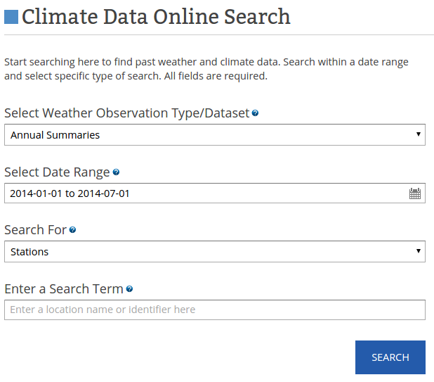

Relation Extraction
Automatic Knowledge Base Construction
Denis Savenkov
Emory NLP Group Meeting
February 9, 2015
"Scientia Potentia Est"
- Solving difficult problems requires a lot of knowledge
- Human spend a significant part of their life learning
- Computers need to have this knowledge as well!
Structured Information
- Most of the information in the world is unstructured:
- Unstructured information is hard to work with
- We need to add some structure...
Example: Question answering
Who was the PhD advisor of Prof. Jinho Choi?
What if we had a database with facts?
We could just query the database and get the answer:
Who was the PhD advisor of Prof. Jinho Choi?
SELECT advisor
FROM phd_advisors
WHERE student = "Jinho D. Choi"
Entities
- We may use different words to refer to the same thing
- Rafa, The King of Clay, Rafael Nadal
- Attributes of entities
- types: e.g. tennis player
- characteristics: e.g. height, weight, birth date
- Some entities are related
- [Tony Nadal] <coach> [Rafael Nadal]
Predicates
- Entities are related in different ways:
- [Tony Nadal] <coach-of> [Rafael Nadal]
- [Tony Nadal] <uncle-of> [Rafael Nadal]
- [Rafael Nadal] <parents> [Sebastián Nadal]
- [Rafael Nadal] <parents> [Ana María Parera]
- Entities with their relations constitute a knowledge base
- We can represent a knowledge base as a graph
Knowledge Graphs
* image from KDD'14 "Constructing and Mining Web-scale Knowledge Graphs" workshop slides
Some challenges
- Validation: knowledge graphs are not always correct
- Interface: how to make it easier to access the knowledge?
- Intelligence: how to create AI fom knowledge graphs?
- Growth: knowledge graphs are incomplete
- link prediction
- ontology matching
- knowledge extraction (this presentation)
from KDD 2014 Tutorial on Constructing and Mining Web-scale Knowledge Graphs, New York, August 24, 2014
Applications
Entity summarization
Applications
Question Answering
- 47M entities and 2.5B facts
- fully structured (entities and relations come from a fixed lexicon rather than free text)
- constructed by community members
- Built by MetaWeb and acquired by Google in 2010
- Data is publicly available
- Will be shut down in 2015 and data transitioned to WikiData
- Tuple: [/m/0jcx, /m/04m8, /m/019xz9] means Albert Einstein was born in Ulm
Incompleteness
71% of people in Freebase have no information on place of birth and 75% have no known nationality *
- Long-tail distribution: we know a lot about popular entities, but there is a heavy tail of less known entities
- How to increase coverage?
- Ask people: crowdsourcing
- Merge with other knowledge bases: ontology matching
- Extract from the available data
* from "Knowledge Vault : A Web-Scale Approach to Probabilistic Knowledge Fusion" by X.Dong et al. 2014
Wrapper Induction
"Wrapper Induction for Information Extraction" by N.Kushmerick et al. 1997
Tables on the web
- Relational data on the web is often represented as tables and it is possible to extract this data (e.g. [1])
[1] "WebTables: Exploring the Power of Tables on the Web", M.Cafarella et al. 2008
DeepWeb
- Large volumes of data is accessible only through HTML form interfaces
- We can automatically make queries and extract the hidden knowledge e.g. [1]

[1] "Web-Scale Extraction of Structured Data" by M.Cafarella et al. 2008
Relation extraction from text
[Emory College] was founded in [1836] in [Oxford, Georgia] by the [Methodist Episcopal Church].
- Focused extraction: need to find a particular attribute of a particular entity (slot-filling)
- Unfocused extraction: process text and extract everything we can
TREC KBA (knowledge base acceleration) http://trec-kba.org/
Focused extraction
"Knowledge Base Completion via Search-Based Question Answering" by B.West et al 2014 (WWW)
Relation extraction from NL
- Structured extractions (fixed entity/relations lexicon)
- Supervised relation extraction
- Semi-supervised relation extraction
- Distant supervision for relation extraction
- Open information extraction (entities and relations expressed in natural language)
Relation extraction from NL
- Today, computers can't understant natural language text
- How do we teach them to extract knowledge then?
- M.Hearst* proposed to extract hyponyms using simple patterns (Hearst patterns)
- Bruises, wounds, broken bones or other injuries...
- temples, treasuries,and other important civic buildings
- All common-law countries, including Canada and England...
- ...
* "Automatic Acquisition of Hyponyms from Large Text Corpora" by Marti Hearst, 1992
Supervised relation extraction
- Training dataset with sentence-level labels for each relation
- Emory College was founded in 1836 (+)
- Founded in 1836, Emory College ... (+)
- Emory College opened in 1838 (-)
- Datasets: ACE 2004 (Automatic Content Extraction), MUC-7 (Message Understanding Conference), BioNLP challenges
- Solves relation extraction as binary classification problem
- Research studied various features* and training methods
* "Combining Lexical, Syntactic, and Semantic Features with Maximum Entropy Models for Extracting Relations" by N.Kambhatla 2004
Features
- words between entities
- types of entities (person, location, organizaton, etc)
- # of words between entities
- path between entities in a parse tree
- ...
Kernel-based methods
Alternatively, one can define a kernel (think similarity measure) between text fragments and apply kernel-based ML method (e.g. SVM or anything else)
- Parse-tree kernels: similarity of parse trees of 2 text fragments
- Each node can have multiple attributes (word, POS, NER type, etc), which are than used to compute the kernel
- "A shortest path dependency kernel for relation extraction" by R. Bunescu & R. Mooney, 2005
- "Tree Kernel-based Relation Extraction with Context-Sensitive Structured Parse Tree Information" by GuoDong Zhou et al, 2007
Supervised relation extraction
- Cons:
- Expensive to obtain the data!
- Adding new relation requires labelling
- Pros:
- High quality training data
- Explicit negative examples
Semi-supervised relation extraction
- Reduce the amount of supervision required
- Examples: DIPRE, Snowball, KnowItAll
- Based on bootstrapping (iteratively improving the system)
From "Snowball: Extracting Relations from Large Plain-Text Collections" by E.Agichtein & L.Gravano, 2000
Semi-supervised relation extraction
- Pros:
- Less supervision required
- Can extract more knowledge triples thanks to bootstrapping
- Cons:
- Semantic drift: as we iterate the system extracts more and more incorrect patterns/triples
- Extending to new relations still requires seed data
Distant supervision
Utilize existing knowledge base to label data and train a model
Image from KDD 2014 Tutorial on Constructing and Mining Web-scale Knowledge Graphs, New York, August 24, 2014
Distant supervision assumptions
Assume we have a knowledge triple $(e_1, p, e_2)$
- All sentences that mentions $e_1$ and $e_2$ together expresses the predicate p
- At least one sentence that mentions $e_1$ and $e_2$ together expresses the predicate p (multi-instance setting)
- A sentence that mentions $e_1$ and $e_2$ together might express the predicate p and a pair of entities can be related with different predicates (multi-instance multi-label setting)
- "Distant supervision for relation extraction without labeled data" by M.Mintz et al 2009
- "Modeling Relations and Their Mentions without Labeled Text" by S.Riedel et al 2010
- "Multi-instance Multi-label Learning for Relation Extraction" by M.Surdeanu et al 2012
Distant supervision training
- Extract features for all sentences that mention a related pair of entities
- Randomly sample sentences with non-related entities as negative examples
- Train a multiclass classification model
Distant supervision
- Pros:
- Scalable!
- Can be applied in different languages
- Cons:
- Training data is noisy!
- No explicit negative examples
Open Information Extraction
- Introduced in [1]
- Extracts natural language triples from text:
- Apple announced a new iPhone 6. =>
(Apple, announced, iPhone 6)
- Extracts noun phrases as entities and verb phrases as predicates
- A trained classifier is used to predict whether an extraction is good
TextRunner [trained extractor] -> ReVerb [chunking] -> Ollie [dependency tree] -> OpenIE 4 (Srlie + RelNoun) [semantic roles]
[1]. "Open Information Extraction from the Web" by M.Banko et al. 2007
Open Information Extraction
- Pros:
- Even more scalable! ($O(N)$ vs $O(N|R|)$)
- Do not require any training data
- Cons:
- Lack of structure: need to cluster predicates
Link prediction
- Some knowledge can be inferred from already acquired knowledge
- [Kyle Korver] plays_for [Atlanta Hawks]
+ [Atlanta Hawks] league [NBA]
= Means that: [Kyle Korver] is [basketball player]
- "Random Walk Inference and Learning in A Large Scale Knowledge Base" by N.Lao et al, 2011
- "Logistic Tensor Factorization for Multi-Relational Data" by M.Nickel and B.Tresp, 2013
Never Ending Language Learning
"Toward an Architecture for Never-Ending Language Learning" by A. Carlson et al 2010
Google Knowledge Vault
"Knowledge Vault: A Web-Scale Approach to Probabilistic Knowledge Fusion" by X.Dong et al 2014
Google Knowledge Vault
from KDD 2014 Tutorial on Constructing and Mining Web-scale Knowledge Graphs, New York, August 24, 2014
Summary
- Computers need data structures
- Knowledge graphs can be used to structure knowledge: entities and relations (RDF graphs)
- Knowledge can be effectively acquired from unstructured data, e.g. natural language text